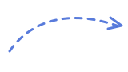

Isi Profil Potensi
Input minat, skill, dan tipe kepribadian agar sistem memahami kekuatanmu.
Platform Karier Digital Modern
Dari minat, skill, hingga kepribadian, sistem akan merekomendasikan jalur terbaik dan roadmap belajar yang jelas.
Lebih dari 8.500+ pelajar dan mahasiswa sudah eksplor karier di WorkSim

Input minat, skill, dan tipe kepribadian agar sistem memahami kekuatanmu.
Sistem menyarankan peran paling cocok lengkap dengan alasan yang relevan.
Pelajari skill step-by-step, centang progres, dan lihat levelmu bertambah.
Kerjakan mini project dan bangun portofolio agar siap freelance atau magang.
Core Features
Sistem semi-AI menganalisis minat, skill, dan kepribadian lalu menyarankan jalur seperti Programmer, UI/UX Designer, atau Data Analyst.
Roadmap visual dari basic hingga praktik: HTML/CSS, JavaScript, Framework, Project, sampai peluang magang atau freelance.
Kumpulkan XP, naik level, dan unlock badge seperti Beginner Coder atau UI Designer Level 2 biar belajar makin konsisten.
Lihat kemajuan skill, progres roadmap, serta rekomendasi langkah berikutnya dalam satu tampilan seperti raport digital.
Dapatkan simulasi kasus dunia kerja: buat landing page UMKM, analisis data sederhana, dan tantangan praktik lainnya.
Tanya jawab, diskusi, dan sharing project bersama mentor serta komunitas agar proses belajar tidak terasa sendirian.
Pilih skenario seperti “Kalau aku jadi UI Designer”, lalu lihat gaji rata-rata, tools yang dipakai, dan contoh task harian agar lebih realistis.

Roadmap Demo
40% selesai, lanjutkan untuk unlock level berikutnya.
Gamification Snapshot
Setiap task yang selesai akan menaikkan XP, membuka badge baru, dan menjaga ritme belajar tetap konsisten.
XP Saat Ini
1.280 +120 minggu iniLevel
9 hampir naikTarget Next
Level 10 320 XP lagiCareer Simulation
Mode simulasi membantu kamu memahami ekspektasi industri: dari salary range, tools, sampai contoh pekerjaan harian di tiap role.
Eksplor SimulasiGaji rata-rata: Rp7.000.000 - Rp13.000.000
Tools: Figma, Maze, Notion
Gaji rata-rata: Rp8.000.000 - Rp15.000.000
Tools: SQL, Python, Looker Studio
Gaji rata-rata: Rp6.000.000 - Rp14.000.000
Tools: VS Code, Git, React
Tips belajar, trend industri, dan challenge mingguan langsung ke inbox kamu.